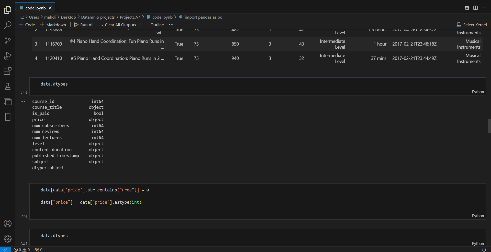
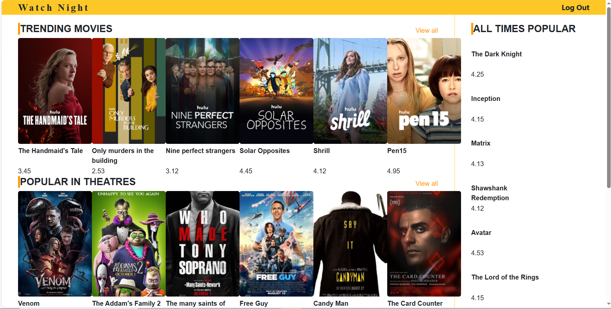
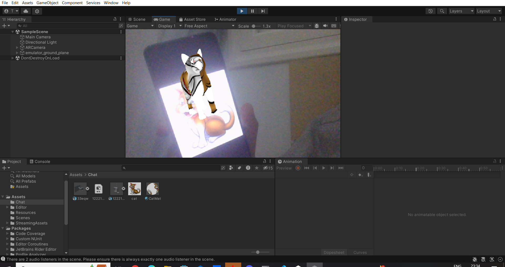
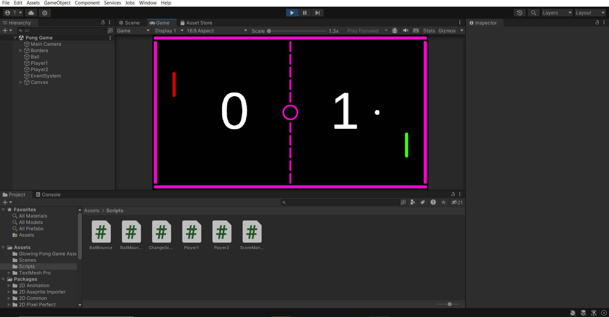
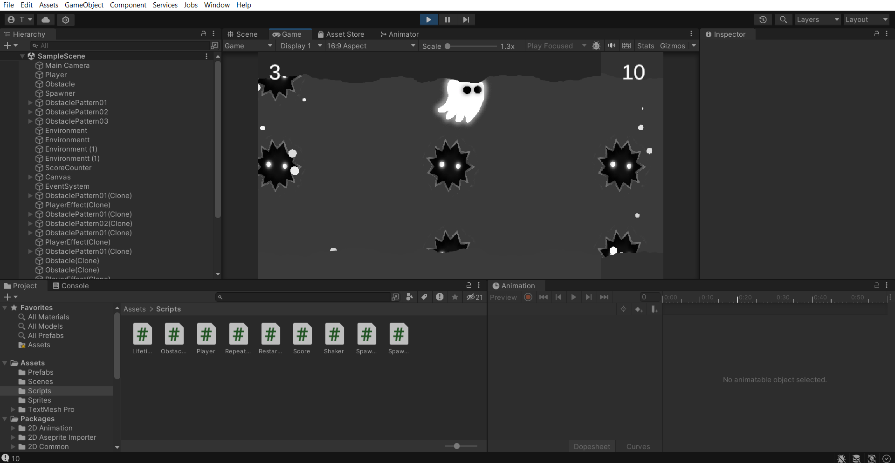
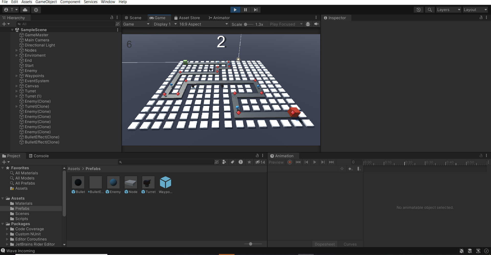
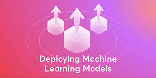

About me À propos de moi About me
My work sits between modelling and production. My last internship covered a financial fraud detection system end to end, from preprocessing to deployment. Before that, I built a real-time face recognition pipeline in an industrial setting. Alongside my studies I explore architectures I find interesting — autoencoders for anomaly detection, U-Net and conditional GANs for image generation. Outside of that, tennis has been part of my daily routine for over fifteen years, as a competitive player and former federal coach. Mon travail se situe entre la modélisation et la mise en production. Mon dernier stage portait sur un système de détection de fraude financière, du prétraitement jusqu'au déploiement. Auparavant, j'ai construit une chaîne de reconnaissance faciale temps réel en contexte industriel. En parallèle de mes études, j'explore les architectures qui m'intéressent : auto-encodeurs pour la détection d'anomalies, U-Net et GAN conditionnels pour la génération d'images. En dehors, le tennis fait partie de mon quotidien depuis plus de quinze ans, comme joueur en compétition et ancien entraîneur fédéral.
3
Professional
Internships
Stages
Professionnels
10+
Technical
Projects
Projets
Techniques
4
Certifications
AWS, NVIDIA, Kaggle
Certifications
AWS, NVIDIA, Kaggle
4
Spoken
Languages
Langues
Parlées
My Skills Mes Compétences
Education / Internships Formation / Stages
July 2026 - August 2026
Machine Learning Engineer — Internship Ingénieur Machine Learning — Stage - PROXYM
Financial fraud detection model with a full preprocessing and inference pipeline, deployed both locally and on a hosted environment. Modèle de détection de fraude financière avec une pipeline complète de prétraitement et d'inférence, déployée en local puis en hébergement.
2026 - 2027
International Exchange Échange International - ESIEA, Laval
Exchange year within my engineering cycle, covering AI, data science and applied statistics. Année d'échange dans le cadre de mon cycle ingénieur : IA, data science et statistiques appliquées.
July 2025 - August 2025
Industrial AI Engineer — Internship Ingénieur IA Industrielle — Stage - LEONI
Real-time face recognition system built on MediaPipe and OpenCV using facial geometric features and a logistic regression model, with an automated data collection pipeline. Système de reconnaissance faciale en temps réel basé sur MediaPipe et OpenCV, utilisant des caractéristiques géométriques faciales et une régression logistique, avec une chaîne automatisée de collecte de données.
2024 - 2027
Engineering Degree — AI & Data Science Cycle Ingénieur — IA & Data Science - EPI Sousse
Engineering programme specialised in Artificial Intelligence and Data Science. Cycle ingénieur spécialisé en Intelligence Artificielle et Data Science.
January 2024 - June 2024
Full Stack & AI Developer — Final Year Internship Développeur Full Stack & IA — Stage de fin d'études - ISITCOM
Complete e-commerce platform built with ReactJS and Spring Boot, integrating two Scikit-learn models (spam detection and product recommendation) exposed as FastAPI micro-services, with JWT authentication. Plateforme de vente en ligne complète en ReactJS et Spring Boot, intégrant deux modèles Scikit-learn (détection de spam et recommandation de produits) exposés en micro-services FastAPI, avec authentification par tokens JWT.
2021 - 2024
Bachelor in Computer Science Licence en Sciences Informatiques - ISITCOM
Fundamentals in AI, data science, web development, VR and AR. Fondamentaux en IA, data science, développement web, VR et AR.
July 2023 - August 2023
DevExpress XAF Development Développement DevExpress XAF - Tunisian United Solutions
Familiarisation with business-oriented websites and frameworks using C# and SQL. Familiarisation avec des sites web orientés métier et des frameworks utilisant C# et SQL.
August 2022 - September 2022
Web Development Développement Web - Bus Software
Developing different parts of a website including dynamic image galleries and statistics display using ChartJS with HTML, CSS, JavaScript, PHP, Bootstrap and MySQL. Développement de différentes parties d'un site web incluant des galeries d'images dynamiques et l'affichage de statistiques avec ChartJS, en utilisant HTML, CSS, JavaScript, PHP, Bootstrap et MySQL.
2020 - 2021
Baccalaureate Baccalauréat - Hammam Sousse High School
Baccalaureate in Mathematics. Baccalauréat en Mathématiques.
My Portfolio Mon Portfolio My Work Mon Travail
Here is some of my work that I've done / been working on in various programming languages. It should be noted that this section is still under current development and the appearance of the projects will depend on personal future choices. This section is still missing some projects due to technicalities, which will be added in the future, including (but not limited to) the final licence degree semester project. Voici une partie de mon travail réalisé ou en cours de réalisation dans différents langages de programmation. Il est à noter que cette section est toujours en cours de développement et que l'apparence des projets dépendra de choix personnels futurs. Cette section ne contient pas encore certains projets pour des raisons techniques, qui seront ajoutés ultérieurement, notamment (sans s'y limiter) le projet de fin de semestre de licence.
Active Projects Projets Actifs

Automated Wikipedia Search using agentic AI
( Langraph )
Recherche automatisée sur Wikipédia à l'aide d'une IA agentique
( Langraph )
Active ... En cours ...
Intrusion Detection System using a combination of AutoEncoders and classic RNN/CNN architectures
( Tensorflow / Scikit-learn )
Système de détection d'intrusion utilisant une combinaison d'Auto-Encodeurs et d'architectures RNN/CNN classiques
( Tensorflow / Scikit-learn )
Active ... En cours ...
Network Anomaly Detection on synthetic traffic data using an Autoencoder architecture, exposed as a REST API
( Scikit-learn / Tensorflow / FastAPI )
Détection d'anomalies réseau sur un jeu de données synthétique via une architecture Auto-Encodeur, exposée sous forme d'API REST
( Scikit-learn / Tensorflow / FastAPI )
Active ... En cours ...
Automatic Colorization of Grayscale Images with a U-Net (ResNet backbone), then experimented with a conditional GAN
( PyTorch )
Colorisation automatique d'images en niveaux de gris avec un U-Net (backbone ResNet), puis expérimentation avec un GAN conditionnel
( PyTorch )
Active ... En cours ...
ML & AI Projects Projets ML & IA
Simulation of automation of control of light and temperature using agentic AI (v2)
( Langraph )
Simulation de l'automatisation du contrôle de la lumière et de la température à l'aide d'une IA agentique (v2)
( Langraph )
Simulation of a calculator through agentic AI
( Langraph )
Simulation d'une calculatrice via une IA agentique
( Langraph )
MovieVitrine ML & RNN models for review classification
( Scikit-learn / Tensorflow )
Modèles ML & RNN pour la classification d'avis MovieVitrine
( Scikit-learn / Tensorflow )
Project Source Source du projet
MovieVitrine ML model for spam detection
( Scikit-learn )
Modèle ML MovieVitrine pour la détection de spam
( Scikit-learn )
Project Source Source du projet
Titanic classification model (survived or not)
( Scikit-learn )
Modèle de classification Titanic (survie ou non)
( Scikit-learn )
Project Source Source du projet
Fake News Model
( Python for Machine Learning )
Modèle de détection de Fake News
( Python pour le Machine Learning )
Credit Card Fraud Model
( Python for Machine Learning )
Modèle de détection de fraude par carte bancaire
( Python pour le Machine Learning )
Customer Segmentation Model
( Python for Machine Learning )
Modèle de segmentation client
( Python pour le Machine Learning )
Movie Recommendation Model
( Python for Machine Learning )
Modèle de recommandation de films
( Python pour le Machine Learning )
Web Development Project(s) Projets de Développement Web

MovieVitrine (Linked to the MovieVitrine and Spam Detection and Review Classification) MovieVitrine (lié à MovieVitrine, à la détection de spam et à la classification des avis)
MovieVitrine Back-End and Models EndPoint (Linked to MovieVitrine and Spam Detection and Review Classification) Back-end MovieVitrine et exposition des endpoints des modèles (lié à MovieVitrine, détection de spam et classification des avis)
Titanic Survival Classification Model endpoints exposure and deployment
( FastAPI )
Exposition et déploiement des endpoints du modèle de classification de survie Titanic
( FastAPI )
Iris Classification Model endpoints exposure and deployment
( FastAPI )
Exposition et déploiement des endpoints du modèle de classification Iris
( FastAPI )
IntelliCommerce, E-Commerce back-end architecture, development and security
( Spring / Spring Boot )
IntelliCommerce, architecture back-end, développement et sécurité e-commerce
( Spring / Spring Boot )
IntelliCommerce, E-Commerce front-end web application
( React.js )
IntelliCommerce, application web front-end e-commerce
( React.js )
IntelliCommerce, E-Commerce AI micro-services exposure and deployment
( Spring Boot / FastAPI )
IntelliCommerce, exposition et déploiement de micro-services IA e-commerce
( Spring Boot / FastAPI )
Unity Projects Projets Unity

Augmented Reality
( Unity )
Réalité augmentée
( Unity )
Project Source Source du projet

Glowing Pong
( Unity )
Glowing Pong
( Unity )
Project Source Source du projet

Shadow Runner
( Unity )
Shadow Runner
( Unity )
Project Source Source du projet

Tower Defense
( Unity )
Tower Defense
( Unity )
Project Source Source du projet
Other Projects Autres Projets
My Goals Mes Objectifs My Goals Mes Objectifs

Exploratory Data Analysis Analyse Exploratoire des Données
Gain a better and proper approach on how to understand data and determine correlations using different techniques. Acquérir une meilleure approche pour comprendre les données et identifier les corrélations à l'aide de différentes techniques.
Machine Learning Model Building Construction de Modèles de Machine Learning
Understand the process from the step of data collection to the measurement of efficiency of a model targeting supervised and unsupervised problems. Comprendre le processus allant de la collecte des données à l'évaluation de l'efficacité d'un modèle, en ciblant des problèmes supervisés et non supervisés.

Machine Learning Model Deployment Déploiement de Modèles de Machine Learning
Gain a solid basis on how to properly deploy a model whilst ensuring dynamic handling of newer inputs and data. Acquérir une base solide sur le déploiement correct d'un modèle tout en assurant une gestion dynamique des nouvelles entrées et des données.
Contact Me Contactez Moi Contact Contact
Contact me here Contactez-moi ici
Either by using social media or using this form ! Via les réseaux sociaux ou en utilisant ce formulaire !

Portfolio Updates Mises à jour du Portfolio Updates Mises à jour
Technical Updates Mises à jour techniques
27/09/2026
Portfolio Update Mise à jour du Portfolio
Skills section redesigned as simple tags instead of percentage bars. Section compétences repensée sous forme de tags simples plutôt que de barres en pourcentage.
27/09/2026
Portfolio Update Mise à jour du Portfolio
Contact section synced with the latest CV: location, phone number and languages updated. Section contact synchronisée avec le CV le plus récent : localisation, téléphone et langues mis à jour.
21/12/2023
Portfolio Update Mise à jour du Portfolio
The portfolio is now divided based on the content. Le portfolio est désormais divisé en fonction du contenu.
08/12/2023
New Section added Updates Nouvelle section ajoutée Mises à jour
The section will include technical as well as content updates. Cette section inclura des mises à jour techniques ainsi que du contenu.
Content Updates Mises à jour de contenu
27/09/2026
Projects Added Deep Learning Projets ajoutés Deep Learning
Network anomaly detection (Autoencoder + REST API) and grayscale image colorization (U-Net/ResNet, conditional GAN). Détection d'anomalies réseau (Auto-Encodeur + API REST) et colorisation d'images en niveaux de gris (U-Net/ResNet, GAN conditionnel).
23/01/2023
Project Added Machine Learning Projet ajouté Machine Learning
Spam Mail detection using Logistic Regression Model. Détection de mails indésirables à l'aide d'un modèle de régression logistique.
15/01/2023
Projects Added Machine Learning Projets ajoutés Machine Learning
These projects were done using Python (.ipynb). The projects consist of different models targeting different objectives. Ces projets ont été réalisés en Python (.ipynb) et comprennent différents modèles répondant à divers objectifs.
15/12/2023
Project Updated Spring Boot Projet mis à jour Spring Boot
The project done with Spring Boot has been updated. Le projet réalisé avec Spring Boot a été mis à jour.
06/12/2023
New Project added Blender Nouveau projet ajouté Blender
A new project demo has been added that demonstrates a scene made with Blender. Une nouvelle démonstration de projet a été ajoutée, présentant une scène réalisée avec Blender.